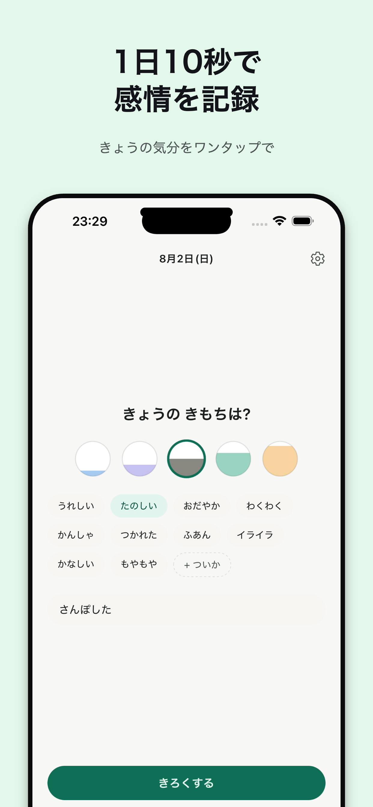
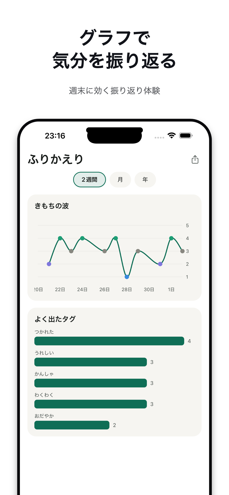
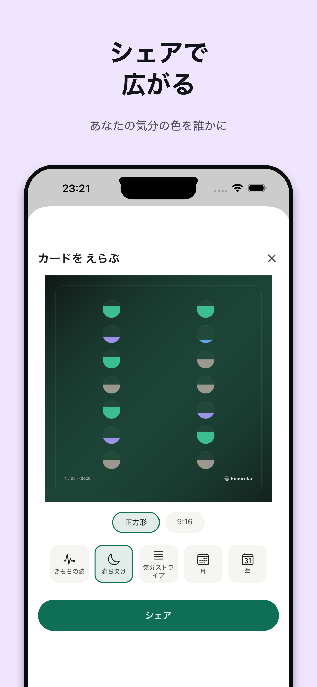

kimorokuは、今日の気分を5段階の水位でタップするだけの気分ログアプリです。長文を書く必要はありません。タグとひとことメモは任意、気分を測ることそのものが記録になります。
最大の特徴はローカルファースト設計。気分・タグ・メモといった日記データは端末から一切出ません。通信は課金処理のみ、広告ゼロ、アカウント登録も不要です。



5段階の気分を円の水位で表現。タグ・メモは任意で、なくてもOK。
きもちの波・よく出たタグを可視化。無料は直近2週間、Plusで全期間・月次・年次分析も。
ホーム画面から気分をワンタップ入力。ロック中でも入力は可能、内容は伏せて表示。
Face ID / Touch IDで記録を保護。ウィジェットからの入力は認証なしで許可し、プライバシーと手軽さを両立。
きもちの波・満ち欠け・気分ストライプの3デザイン、正方形/9:16の比率から選んでシェア。メモのテキストは画像に含まれません。
サードパーティSDKは課金基盤のみ。分析・広告SDKは一切導入していません。